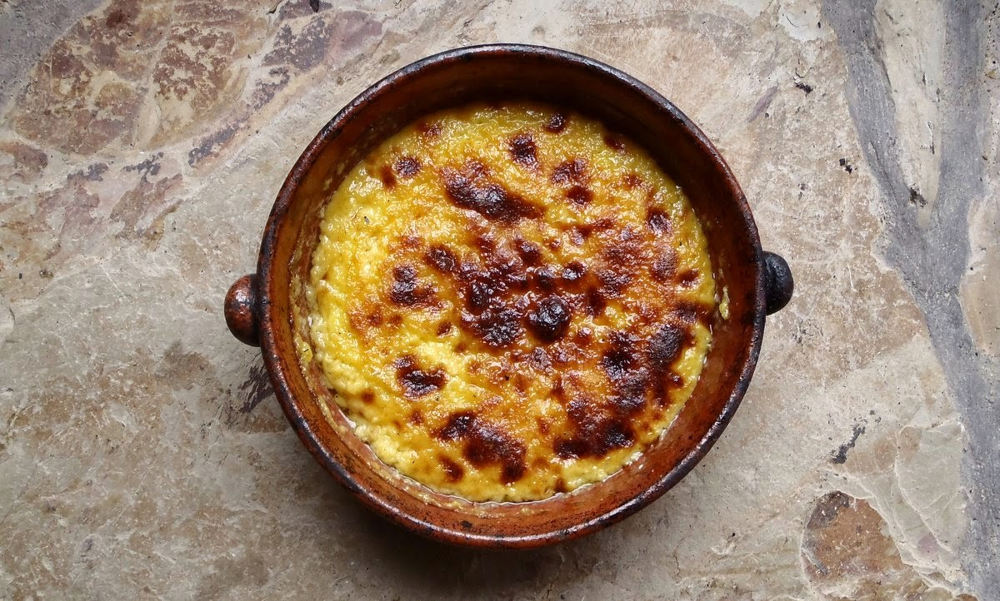
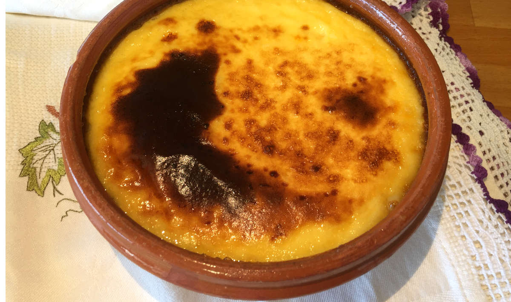
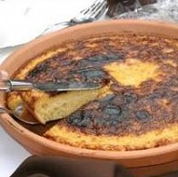

Receita de Tigelada Portuguesa

Ingredientes:
- 6 ovos
- 1 litro de leite
- 200g de açúcar
- 100g de farinha
- 1 casca de limão
- Canela em pó q.b. (opcional)

Modo de Preparo:
- Pré-aqueça o forno a 180ºC.
- Bata os ovos numa tigela grande.
- Adicione o açúcar e a farinha, mexendo bem até obter uma mistura homogênea.
- Aqueça o leite com a casca de limão numa panela até começar a ferver.
- Retire a casca de limão e adicione o leite quente à mistura de ovos, açúcar e farinha, mexendo constantemente.
- Unte uma forma com manteiga e despeje a mistura.
- Leve ao forno por aproximadamente 40 minutos, ou até que a tigelada esteja firme e dourada por cima.
- Deixe esfriar antes de servir.

Se desejar, polvilhe com canela em pó antes de servir.
Página feita por Rafaeiscoding para EBDG - Goís